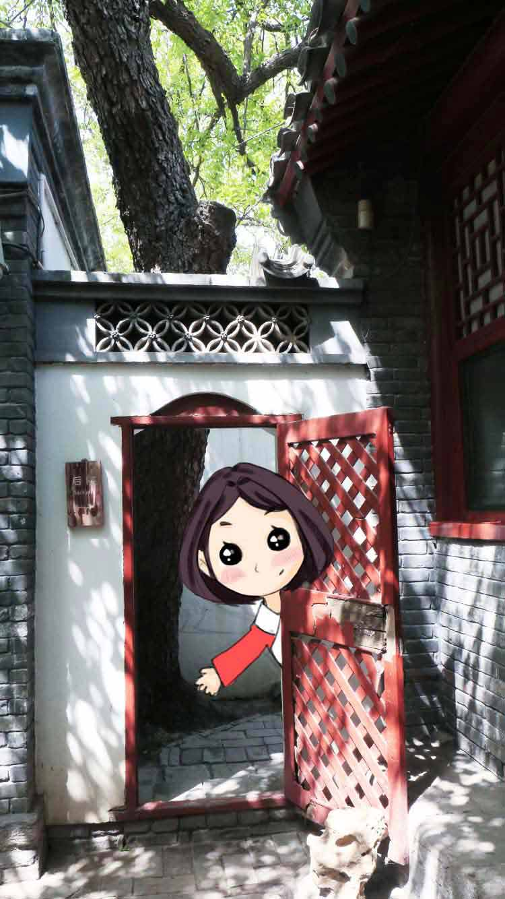
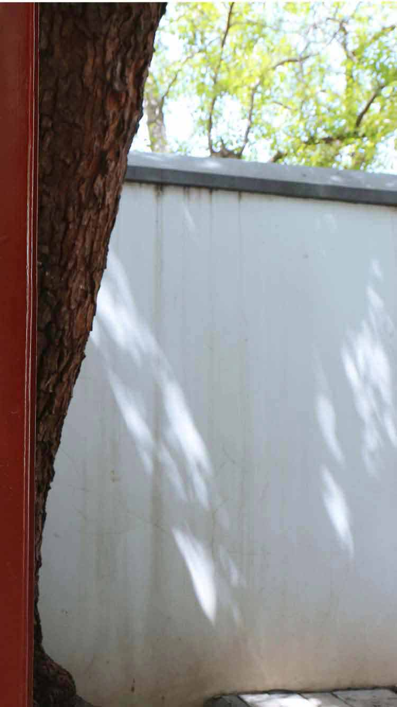
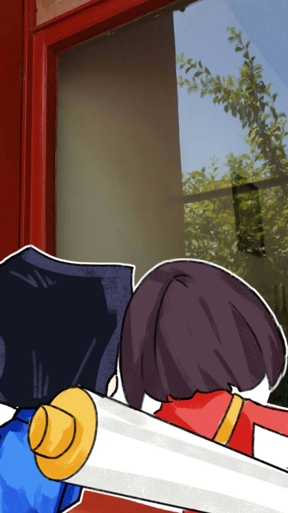
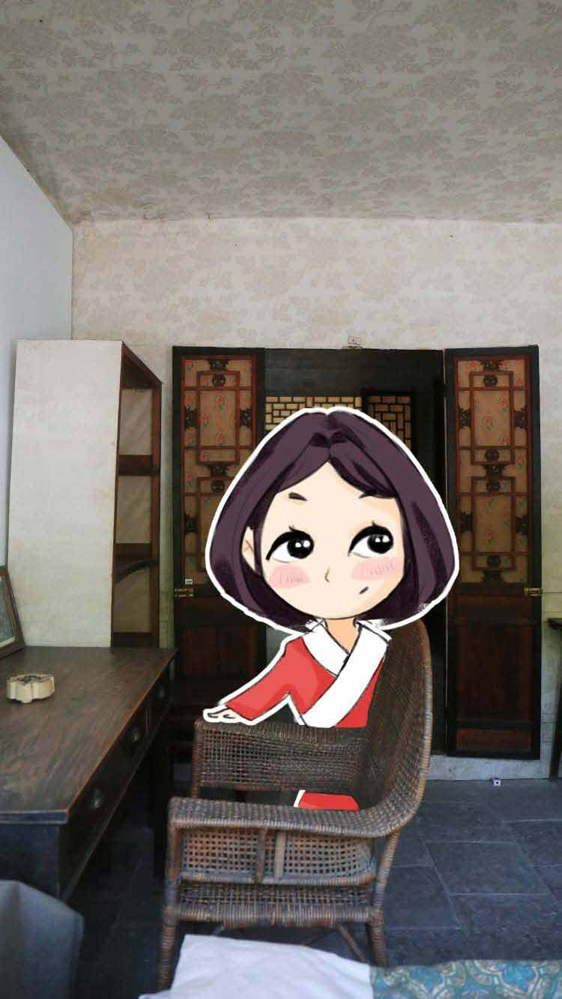
- 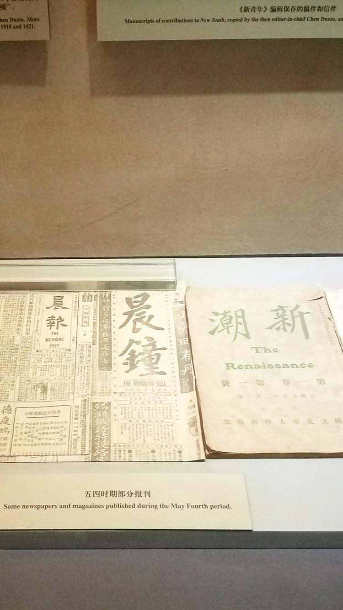
- 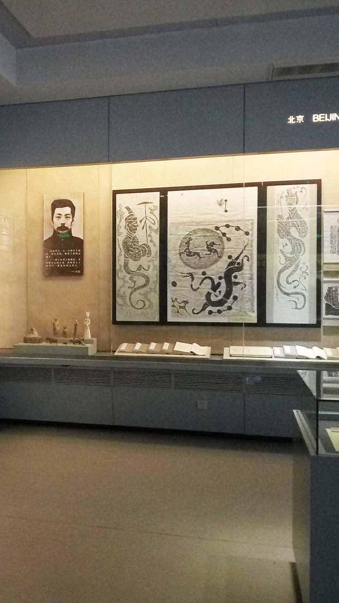
- 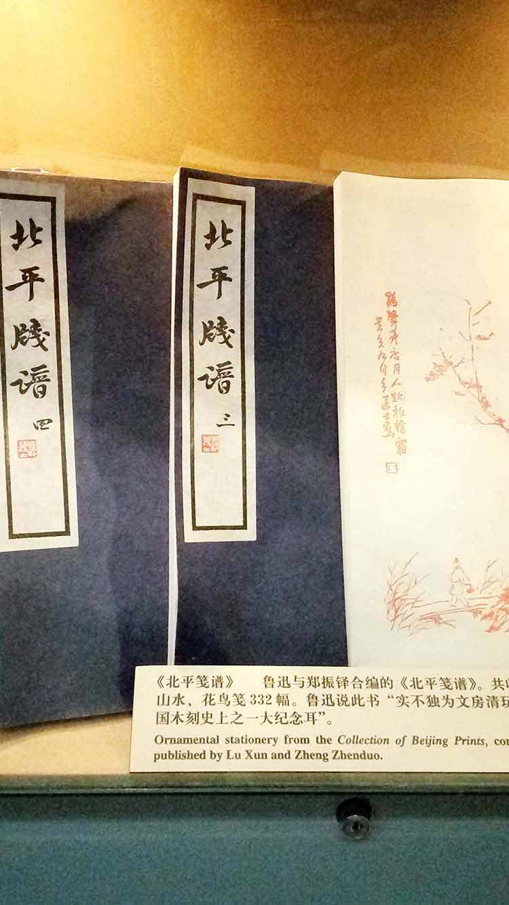
- 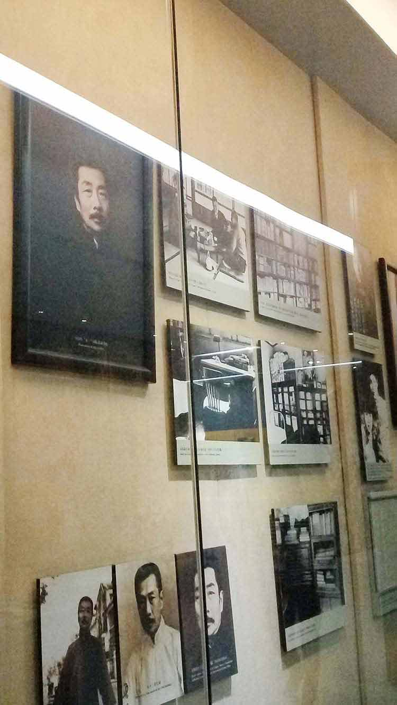
- 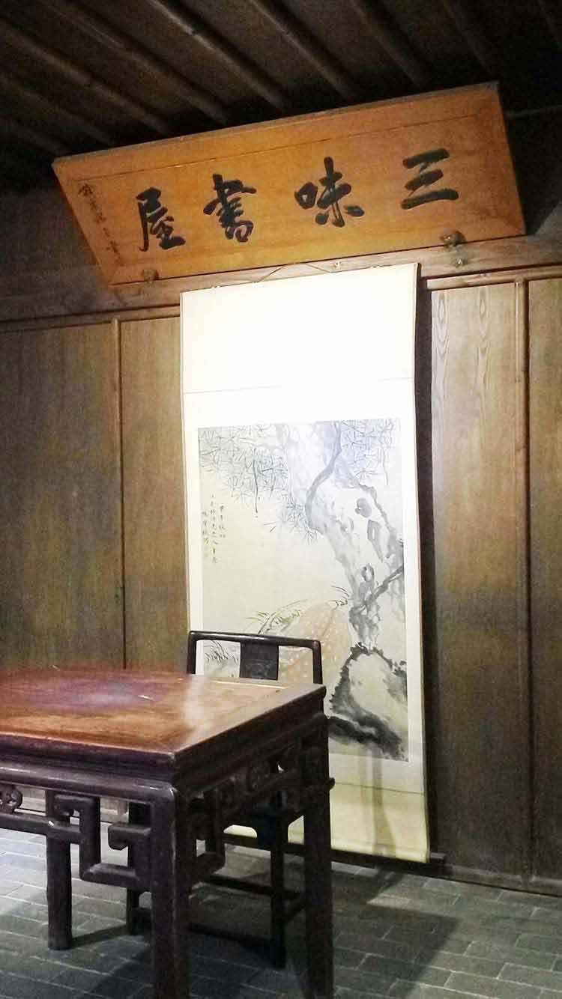
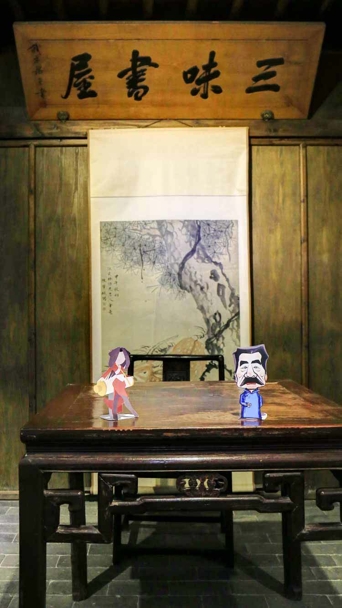
鲁迅先生知多少？
-
Q1鲁迅在北京期间做过什么兼职？
A.大学讲师 B.饭馆老板 c.玻璃厂摊主 D.公务员 -
Q2鲁迅院子里种的是什么树？
A.玫瑰 B.紫藤萝 c.丁香 D.梅花 -
Q3鲁迅还是一个优秀的“设计师”，以下哪个选项不是由鲁迅设计或参与设计？
A.北大校徽 B.北洋时期中华民国国徽 c.《呐喊》 D.新青年封面 -
Q4鲁迅故居的题字是谁写的？
A.郭沫若 B.海婴 c.许广平 D.胡适 -
Q5以下哪道菜式是鲁迅不喜欢的？
A.油炸丸子 B.三不沾 c.素鱼素鸡 D.辣鱼粉皮 -
Q6鲁迅曾在“老虎尾巴”墙上挂的画作是？
A.《五个警察一个O》 B.《藤野先生》 c.《野草》 D.《狂人日记》 -
Q7以下哪句话不是鲁迅说的？
A.友谊是两颗心真诚相待，而不是一颗心对另一颗心敲打 B.面具戴太久，就会长到脸上，在想揭下来，除非伤筋动骨扒皮。 c.在你最悲观最失望的时候,那正是你必须鼓起坚强的信心的时候。 D.但现在的青年最要紧的是‘行’,不是‘言’ 。
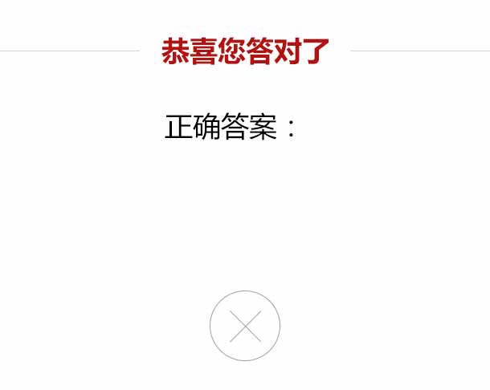
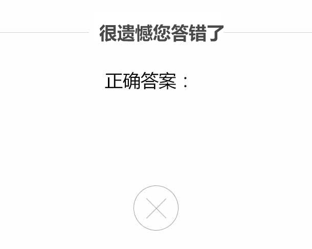
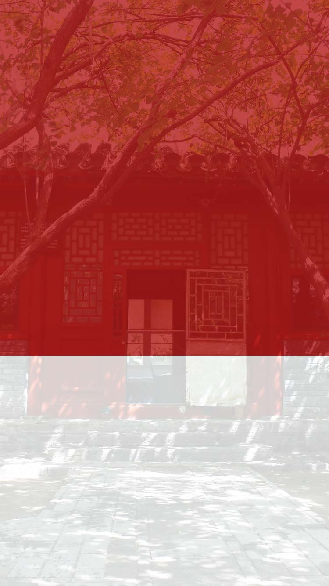